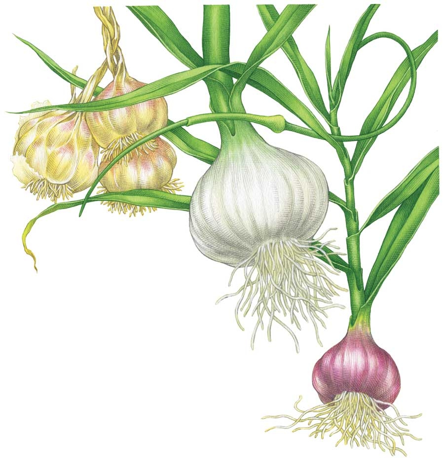

Growing Garlic
Learn how to plant, grow and harvest garlic, plus get pest prevention tips and discover great garlic types to try.
By Barbara Pleasant
October/November 2009
The last crop to go into the garden, garlic is planted in fall and harvested the following summer. Flavorful, nutritious, and helpful for warding off vampires, garlic also is easy to grow as long as you plant varieties suited to your climate. Garlic grows best in fertile, well-drained soil with a near-neutral pH between 6.5 and 7.0.
Garlic Types to Try
Softneck types grow best where winters are mild, though some tolerate cold to Zone 5. Most varieties do not produce scapes (edible curled flower stalks), but softnecks are great for braiding. Subtypes include Creole, artichoke and many Asian varieties.
Hardneck types adapt to cold winter climates, and all produce delicious curled scapes in early summer. Popular subtypes include porcelain, purple stripe and rocambole varieties.
Elephant garlic produces a large, mild-flavored bulb comprised of four to six big cloves. Closely related to leeks, elephant garlic is hardy to Zone 5 if given deep winter mulch.
Check out our chart of garlic types, which includes descriptions, growing tips and great varieties to try.
When to Plant Garlic
In fall, plant cloves in well-drained beds after the first frost has passed and the soil is cool. Cloves can also be planted in late winter as soon as the soil thaws, but fall-planted garlic produces bigger, better bulbs.
How to Plant Garlic
Choose a sunny site, and loosen the planting bed to at least 12 inches deep. Thoroughly mix in a 1-inch layer of mature compost. In acidic soil, also mix in a light dusting of wood ashes. Wait until just before planting to break bulbs into cloves. Poke the cloves into the ground 4 inches deep and 6 to 8 inches apart, with their pointed ends up. Cover the planted area with 3 to 5 inches of organic mulch, such as hay or shredded leaves.
Harvesting and Storing Garlic
From early summer to midsummer, watch plants closely and pull them when about one-third of the leaves appear pale and withered. Use a digging fork to loosen the soil before pulling the plants. Handle the newly pulled bulbs delicately to avoid bruising them. Lay the whole plants out to dry in a warm, airy spot that is protected from rain and direct sun. After a week or so, brush off soil from the bulbs with your hands, and use pruning shears to clip roots to half an inch long. Wait another week before clipping off the stems of hardneck varieties or trimming and braiding softnecks into clusters. Do not remove the papery outer wrappers, as these inhibit sprouting and protect the cloves from rotting.
Storage life varies with variety and with growing and storage conditions. When kept at 50 to 60 degrees Fahrenheit, rocamboles store about four months, other hardneck garlic varieties usually last six months, and softneck and elephant garlic store for eight months or more. Hang your cured crop in mesh bags, or braid softneck types and suspend from rafters in a cool basement or garage.
Saving Garlic Bulbs for Planting
Many garlic varieties fine-tune their growth patterns to the climate in which they are grown, so planting cloves from bulbs you grew yourself can save money and also result in a strain that is especially well-suited to the conditions in your garden.
As you harvest and cure your crop, set aside the biggest and best bulbs as your “seed” stock. One pound of cured bulbs will break into about 50 individual cloves, which is enough to plant a 25-foot-long double row.
If allowed to flower, some varieties produce fleshy bulbils (little bulbs) atop the flower stalk. Elephant garlic often develops elliptical, hard-shelled corms underground outside the main bulbs. Garlic bulbils and corms can both be replanted. The first year after planting, bulbils and corms will grow into small plants that can be harvested as scallion-like “green garlic” in late spring, just before the roots swell. If left unharvested, bulbils and corms develop into full-size bulbs in two to three years.
Garlic Pest and Disease Prevention Tips
Tiny onion thrips rasp pale grooves into garlic leaves, but they have many natural predators. Keep areas near garlic and onions mowed to reduce the weedy habitat thrips prefer. Monitor populations with sticky traps, and use a spinosad-based biological pesticide to control serious infestations.
Onion root maggots seldom infect garlic planted in soil where onion family crops have not been planted for two years, but the mobile adults may still lay eggs around the base of young plants. Where pest pressure is severe, dust the area around plants with diatomaceous earth in late spring, which is when the egg-laying females are most active.
Prevent fusarium and other soilborne root rot diseases by growing garlic in well-drained, fertile soil. Avoid injuring the roots when weeding, because diseases often enter plants through broken tissue.
Garlic Growing Tips
Experiment with types and varieties, because each reacts differently to weather and rainfall patterns. A spring hot spell that bothers one variety may benefit another. Our Seed and Plant Finder can help you track down the garlic varieties you want.
To grow garlic greens for cooking, plant whole bulbs 12 inches apart in the fall. In spring, when the greens are 10 inches tall, grab them with one hand, and use your other hand to lop them off with a knife. You should get two more cuttings before the plants give out.
You can make garlic powder by drying thinly sliced garlic at 150 degrees until it’s crisp. Grind to a powder in a food grinder or blender.
Cooking with Garlic
Without a doubt, garlic works flavor miracles when added to food. The pungency of raw garlic varies depending on the variety, and all types of garlic mellow when cooked. In addition to tossing chopped garlic into soups, stews and stir-fries, try baking whole bulbs with a little salt and olive oil, and then spreading the soft, creamy flesh on warm bread. If you grow hardneck types of garlic, be sure to harvest the curled scapes that appear in early summer. Scapes can be eaten fresh, or blanched and frozen.
|
 KEITH WARD A world of flavors awaits in every bulb! Garlic’s taste has several dimensions that come alive depending on how the plant is cooked. Shown here, from left to right, are braided softneck garlic, fresh elephant garlic, and purple stripe hardneck garlic. |
 KEITH WARD Wait until just before planting to break your garlic bulbs into cloves. One pound of cured bulbs will split into about 50 individual cloves, which is enough to plant a 25-foot-long double row. |
|